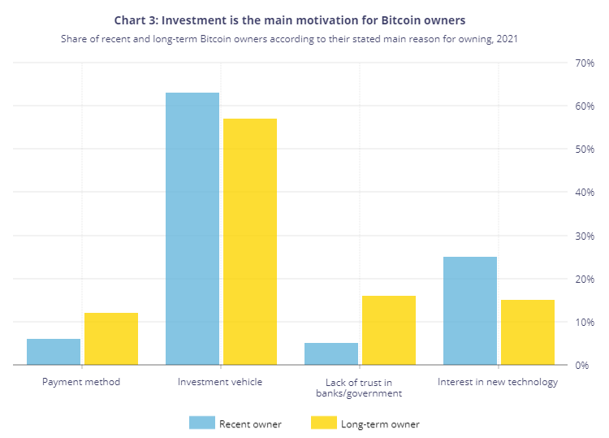
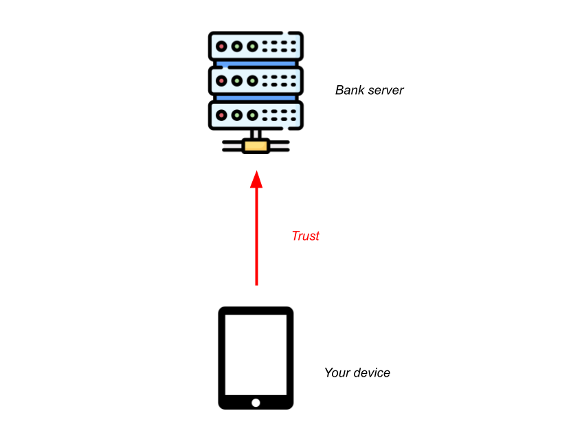
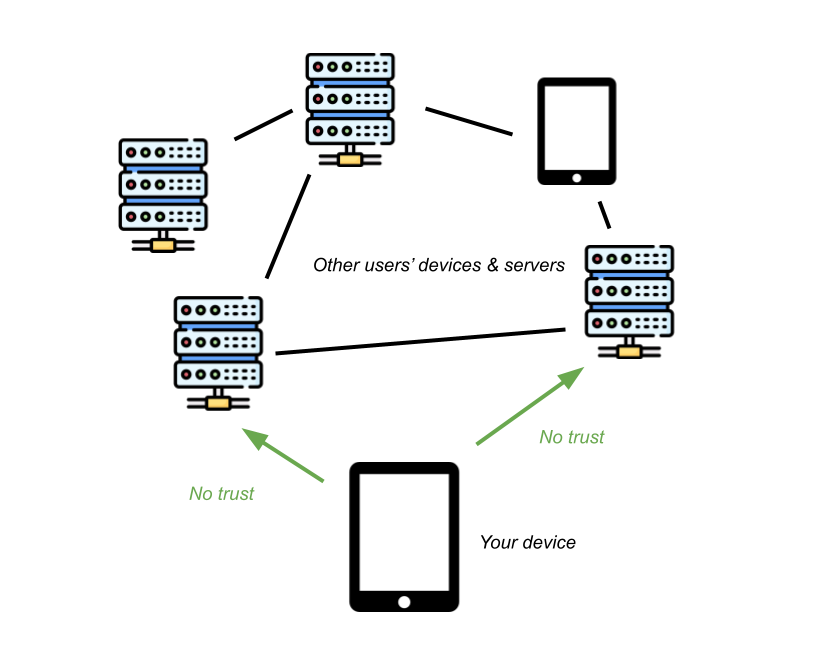

bitcointech.wiki
bitcointech.wiki
bitcointech.wiki
bitcointech.wiki
So you’ve heard about *this bitcoin thing* — but maybe you’re skeptical: after all, why should anyone *trust* this magic internet money? It’s natural that the first question that comes to mind when considering finance is often the trustworthiness of the services we’re using. After all, in the world of traditional finance, the untrustworthiness of banks and institutions leads time and time again to negative outcomes for the end user: loss of funds, civil forfeiture without due legal process, inflation, or restrictions and other difficulties making you feel like *it isn’t really your money*. Bitcoin is thought to be released in response to one such *negative outcome*, the $700 billion bank bailout of 2008 — a reference to the bailout is encoded permanently in the bitcoin ledger by it’s pseudonymous creator, Satoshi Nakamoto. But why is it any different than these traditional systems? That’s the cool part: Bitcoin aims to remove trust from the equation entirely, by placing control back into the hands of the users. Not only are one’s funds in their own custody, giving them 100% jurisdiction over their own security and what they can do with their money (colloquially known as “being one’s own bank”) but users even have direct control over elements like fiscal policy and updates to the system. The best part is that bitcoin is anonymous (more precisely, pseudonymous), open, and decentralized, meaning anyone in the world can participate and reap the benefits.
These benefits can be applied to all kinds of scenarios. For example, here are some of the practical applications of bitcoin:
Maybe you’re unconvinced: I was too the first time I heard these claims — and the picture that popular media paints doesn’t help. A significant majority of the popular representation of bitcoin conflates it with the “cryptocurrency” space: a significant harm to the bitcoin ecosystem which piggybacks on bitcoin’s publicity while throwing out all of its values, with “projects” and “tokens” ranging from corporate scrip of dubious security at best, and genuine, outright scams at worst. See shitcoins for more on that topic.
In addition, a study by the Bank of Canada has shown that roughly 57% of canadian bitcoin owners see it primarily as an investment vehicle, compared to the 16%, 15%, and 12% that use it because of lack of trust in banks in the government, interest in new technology, and it’s use as a payment method, respectively.
In this introduction to bitcoin, I will explain how bitcoin actually does do what it claims to do, and how you can get started participating in the bitcoin ecosystem yourself.
Be warned, bitcoin is extraordinarily frustrating to try to learn: it took me two and a half years to learn what I’m attempting to summarize in one article. It is completely natural to get stuck on this explanation— if you would like a hand, the bitcointech.help discord server waits with open arms. It’s important to the philosophy of bitcoin that every user understands the system they’re using; it’s impossible to achieve the elements of self-sovereignty otherwise. You don’t need to be a programmer or a computer whizz to get there, just have an open mind and a lot of patience.
On a technical side, let’s jump into the computer architecture of a traditional bank (an easier comparison to make as bitcoin is entirely digital, but most concepts from physical banks and physical cash are largely the same).
When you go to log onto your online banking terminal, your computer contacts a server that is run by the bank. The bank’s server stores all of the information regarding your account and balance in their database, and sends it to your computer upon request. However, this means that the bank is entirely in control of your money: freezing, limiting, or taking it is as simple as modifying some numbers “on their end”. Banks can and do often make it difficult to withdraw all of your money, or charge exorbitant fees for certain operations like sending money overseas. In addition, if these bank servers are poorly secured, which you have no control over, your funds could be at risk, and the system lacks any form of privacy as your account is tied to your real identity.
When you open a bitcoin node/client on your computer, no central server is contacted — no entity is trusted to reflect an accurate log of balances or transactions. Instead transactions and other data is fetched from a peer-to-peer network — more on this later — which is not trusted, instead transactions are protected by two important concepts, digital signatures and proof of work.
Without relying on a central authority to validate transactions, it’s difficult to know that a transaction is authorized by whom it claims to orignate from— after all, anyone can *say* anything. This is where digital signatures come into play: If Alice wants to pay Bob a certain amount of bitcoins, she will mathematically create a digital signature for her transaction. Much like how pen and paper signatures are intended to function, digital signatures are assumed to be truly unforgeable because of the algorithms they use.
Digital signatures are not that complicated on a high level. The algorithms require pairs of data, Public Keys and Private Keys (often referred to as Pubkey/PK and Privkey/SK(Secret Key) respectively). Alice’s coins are initially associated with a Public Key. As the name suggests, this key is publicly available, and allows anyone to send it bitcoins which will be then controlled by Alice. However, the Private Key is secret to Alice, and is what allows her to mathematically produce valid signatures that prove the owner the Public Key, her, has authorized a transaction. If Alice were to lose this private key data for some reason, her bitcoins would be lost forever — the signature is the only way to move/spend them. This is what is meant when someone “has bitcoins” on a device or hard drive, that device is simply storing the private key and potentially a set of instructions on how to use it to produce a valid signature.
Addresses, which are typically derived from Public Keys, are the only form of “account” or “identification” bitcoin has. Keep in mind however that not all addresses are derived in the same manner. Some may use multiple keys, or no keys at all — anything is possible because bitcoin allows anyone to define any arbitrary script controlling the spending of their funds, and then derive a receiving address from it. For a normal, out of the box bitcoin wallet software however, these locking scripts use a standard format which takes one key (one signature to spend).
Digital signatures are only 50% of the solution, however — and they’re not why bitcoin wasn’t created sooner. Digital signatures (more specifically, asymmetric keys, which can be applied to encryption as well) are in use everywhere, making the whole internet run; it’s the same technology that makes websites secure with SSL/TLS. While they do enable the secure authorization of transactions hopping from one public key to another on bitcoin, they don’t solve the double spend problem, which is really bitcoin’s innovation.
Imagine bitcoin tried to run just with this technology, lacking any transaction database of course. The only way to send a transaction would be to sign it off and actually send the transaction data directly to the recipient. However, nobody would know that you’ve actually sent that transaction, because there’s no ledger to keep track. So, you could keep sending the same coins to different people, and unless they got together and found out they actually technically had copies of the same coins, nobody would be any wiser. It’s like if you were to photocopy the cash in your wallet: same serial number, but it could end up in two different people’s hands at the same time — one of them can’t be real.
Bitcoin’s proof-of-work blockchain serves as a public ledger of all bitcoin transactions, so that everyone is aware of the current location of all coins, thereby making them impossible to “spend twice”. The way that this is done to ensure it is 100% decentralized is much different than a simple database like a bank’s digital ledger might be.
When Alice has some coins she wants to send to Bob, she will sign a transaction transferring these coins to a public key owned by Bob. However, this is not enough for a transaction to belong to Bob irreversibly — in bitcoin we call this an unconfirmed transaction.
In order for Alice’s transaction to become confirmed and irreversible, it has to be included in a block within the blockchain. The blockchain is simply a construct which allows all confirmed transactions to accumulate proof-of-work, making them more and more difficult to reverse over time.
Proof-of-work (literally, proof of computational power and time) is a metric which is easily verifiable by any party, difficult to cheat, and provably fair, making it ideal for use in bitcoin. The way that proof-of-work is accumulated on any piece of data is done through the use of one-way hash functions. Essentially, these are mathematical operations that can be done on some data that are very simple to do in one direction, but assumed to be impossible to reverse. Proof-of-work is generated by “miners” — which can be anyone — who run billions of these hash functions every second, slightly changing the input data each time. As they run more and more of these functions, they become more and more likely to uncover rarer patterns within the output: a permutation of the input data which produces a rare pattern is seen as proof for a lot of work, because it would be almost impossible to obtain without running tons of hash functions. In bitcoin, the “rare pattern” is defined as a lower and lower numerical output of the hash function; but higher and higher or any other pattern would work just as well.
These “miners” with powerful computers take incoming bitcoin transactions and accumulate them into blocks— essentially just large bundles of transactions, which contain a reference to the previous block — hence it is a chain. Because of this back-referencing structure, all proof of work added to confirm new transactions also applies cumulatively to every earlier block and thus every earlier transaction ever made.
Bitcoin’s code contains an algorithm which automatically adjusts the required amount of proof of work for each block around every 2 weeks — this is calculated based on the average time between blocks for the past 2 weeks, and targetted to around 10 minutes. This has the effect of making the system more secure when more miners begin mining, instead of just making it go faster.
Thus, Bob can accept the transaction from Alice as soon as he sees it included in a block, or if he chooses, he may wait a few more blocks after that to ensure sufficient proof-of-work is accumulated. This is because the only metric for knowing which valid blocks are “real” (read, irreversible) are the ones that participate in the blockchain with the most proof-of-work; a sufficiently powerful miner could simply abandon recent blocks and start mining off of an older block, having the effect of rewriting newer blocks and “unconfirming” any transactions within them. And as always, any unconfirmed transaction could spend the same coins as another — only the one in the blockchain is valid, and the choice of which that will be between conflicting transactions is left up to the miners. This is why it’s so important that no one party controls more than 50% of the computer power used to mine bitcoin (this is colloquially known as a 51% attack), as they could outpace all the other miners in proof-of-work and begin rewriting the chain wherever they like.
Miners are not willing to use all this energy and commit their computer power for free, however. The way bitcoin rewards it’s miners for their duties is by giving them newly minted bitcoins for every block that is mined. The number of bitcoins that they will receive per block is cut in half every 4 years, up to a maximum of 21,000,000 bitcoins, which will be reached in approximately 2140. By that point, it is assumed that transaction fees — the amount paid by those who transact to bid to the miners for the block space their transactions take — will be enough to cover all necessary mining costs.
Because of this limit of the maximum amount of bitcoins, bitcoin is said to be slightly deflationary as opposed to inflationary like most currencies. Over time, the supply of bitcoin will remain static or slowly decrease as mistakes lead to lost bitcoins. This is one of the reason why bitcoin is sometimes compared to gold; it’s supply is scarce.
Bitcoin’s code is run by every node on the network — every user can and should run their own node. A node is simply a piece of software you can run on a computer. Each node will keep it’s own copy of the blockchain, independently verify things like proof of work, if transaction signatures are valid, and if all data matches certain rules. This is known as Nakamoto consensus, the state of all bitcoin nodes being in agreement of the rules and validating that they are followed, ensuring that they all have the same state. This state is known as “bitcoin” simply because, socially, we agree on what set of rules makes bitcoin bitcoin. Whenever bitcoin undergoes a fork (organized upgrade or purposeful separation, no difference), multiple versions of the rules emerge because of the existence of client programs that follow different rules. As time goes on, socially, society will tend to agree on which version can be considered “bitcoin”, but this isn’t always straightforward or quick. It’s important to understand that bitcoin is just a set of rules defined in code, and not one static thing. By running your own node, you gain control over the rules you wish to follow and protect yourself from malicious actors which try to make you believe something follows the rules when it doesn’t, or outright try to break the rules you believe in. You gain the ability to define your rules of what is and isn’t bitcoin and choose to participate in the fork that suits your interests should there be such a scenario.
Because of the nature of the blockchain and it’s transactions, bitcoin has a public ledger displaying all transactions and the addresses that are in use and the amounts of coins they contain. This may be a privacy disadvantage, bringing the system from an idealized anonymous down to pseudonymous, but it has the advantage of making the supply of coins and the exact transaction approval scripts fully auditable, which is done at every moment by every client.
So you want to give it a spin? There’s some steps you should take. The first, and most necessary step would be to find a wallet which supports your needs, and run it in testnet mode — essentially a clone of the bitcoin network where the coins are worthless, where you can play around and test out features. My personal recommendations are Electrum for desktop, and BlueWallet for mobile. If your wallet doesn’t support testnet, you can also try it out with a small amount of bitcoin — ask a friend for some!
If you’re comfortable operating a software wallet and understand that different amounts of bitcoin necessitate different amounts of security, try purchasing a small amount of bitcoin and sending it to your wallet! The bitcointech.help discord server maintains a list of reputable exchanges as well as decentralized, peer-to-peer ones where you can safely trade with others with no middleman.
Additionally, you may want to consider running your own bitcoin node and connecting your wallet to it — especially if you have a larger amount of bitcoin and/or plan to use a hardware wallet, a specialized security device intended for larger amounts of bitcoin. There are many many tutorials available for this online — and if you need help, come to the bitcointech.help discord server!
Bitcoin as a technology was the first of it’s kind and a revolutionary development not only in the field of finance but also in computer science. The exact mix of features and properties that made bitcoin what it is are all extremely important, and the modification of some tends to destroy the concept entirely — which is not to say that bitcoin doesn’t evolve and upgrade. Every few years there tends to be a well thought out, significant upgrade to bitcoin, the product of a lot of collaboration between different parties. Bitcoin does upgrade, it does modernize, but it is forced to do so in a responsible way, considering all factors.
Nonetheless, many parties have created countless “alternatives” to bitcoin, each coming with a multitude of problems that precludes them from sharing the same properties as bitcoin.
In the absolute best-case scenario, a shitcoin would just be an almost 1:1 bitcoin clone, but it would come with massive security risks. Because of the significantly reduced amount of miners on these blockchains, they are significantly easier to attack— the equilibrium and incentive to keep it that exists on bitcoin doesn’t apply. 51% attacks are usually the biggest risk with those kinds of shitcoins.
These best-case scenarios are few and far between however. The most common risks of shitcoins are a lack of decentralization, verification, or privacy, which in themselves lead to little or no security. This comes in many forms:
Commonly, shitcoins have entire companies behind them, which decide the direction in which the coin is going to evolve — no decentralization. These companies also answer phone calls from organizations like OFAC and can be compelled in a multitude of ways to enact censorship or leak private information (which you shouldn’t be leaking to them in the first place).
Additionally, these companies often have a significant profit motive and hold massive amounts of their cryptocurrencies, making them much more interested in marketing and selling their gimmick rather than evolving it in a positive direction.
Sometimes, these shitcoins are so badly setup that they can’t even be considered cryptocurrencies, because of the impossibility of running your own node and validating blockchain data yourself. Often you will be trusting random third parties to serve you accurate data, and are ONLY really in control of your keys, if that.
Moreso, these shitcoins may use a less secure proof of work algorithm, or more often than not no proof of work at all. Most commonly, shitcoins either run on proof of stake, or are federated. Proof-of-stake is a system where instead of mining with computers, you simply lock up your coins with a special script on the blockchain, and the amount of coins you have locked is proportionally how likely you are to be a “block miner” for the next block. When working as it is theoretically intended, it has a significant tendency to make the rich richer which reduces decentralization as they can continue to stake exponentially. There is also an advantage for the scammers behind the deal to have others locking their coins up, as they then can’t sell them which tends to increase the market value temporarily.
Often proof of stake doesn’t work as intended however, and leads to much worse outcomes. It is not an “optimization” or “environmentally friendly”, it is a significant harm and turns the solved problem of bitcoin into an unsolved one based on unsound logic. Proof-of-work currently doesn’t use as much energy as the entire traditional financial system, and bitcoin can scale to many many users without introducing more.
Worse than proof of stake are federations, where a group of “trusted” individuals or organizations will vote on pretty much everything that is to occur with the system; either manually for the addition of upgrades, or automatically for the validation of transactions or blocks. This has absolutely no security, no decentralization, and is completely unrelated to concept of a decentralized ledger that bitcoin’s proof-of-work blockchain is.
Not only do shitcoin systems tend to be entirely broken in these ways, but sometimes additional scams are built on top of these already terrible systems.
The most common of these scams are NFTs and tokens; tokens being invented “currencies” one can move around using these blockchains. Completely pointless, because they don’t even attempt to be different from the systems they are built on. It’s like if I were to establish my own central bank and start trying to sell you my invented currency — no better than monopoly money.
NFTs on the other hand are essentially non-duplicable tokens, each containing some unique data, typically an image, a video, or some text. Not only is it a huge waste of space to upload random non-financial content to a blockchain, but these systems often make claim about some ownership or IP rights you can have over the content of the NFTs you own, which is just untrue and not legally viable. At best these are inefficient digital trading cards, being sold not because they represent some innovative or unique trading card game, but because they are misconstruing what the technology they run on actually is. It’s akin to going on a random website and giving them money to put some image in your account, pointless.
There is also a movement creating NFTs and tokens on bitcoin — this is largely the same, a scam no matter what it’s built on.
Bitcoin makes certain mathematical assumptions which are important to note. The security of bitcoin is dependent on the security and one-way nature of the sha256 hash function. This assumption is based on the p != np conjecture, essentially stating that just because a problem is easy to verify, it may not be easy to solve. As it stands now, the time to “break” sha256 — to find the minimum hash value or to find hash collisions, is astronomical, and isn’t anything we need to worry about (it would take longer than the remaining lifetime of the universe by all conventional means). However, should p = np, bitcoin as well as much of the internet will be completely without security. There would still likely be a good chance of recovering bitcoin and switching to some other hash algorithm, however.
Additionally, bitcoin relies on the security of ECDSA signatures — based on the non-existence of a solution to the discrete logarithm, but less so than it depends on sha256. An algorithm, grover’s, which operates on quantum computers may allow for the breaking of ECDSA signatures, but it is as of yet unknown how efficiently or rapidly this might be done. If such an algorithm was to be put in place, it would likely require bitcoin to migrate to a new, quantum-proof signature algorithm. However, there would be much warning to this, and coins would not be at risk unless addresses are reused, because grover’s requires the raw public key to operate, which is not revealed until one makes at least one transaction away from an address. Again — this is another problem that would have impacts reaching further than bitcoin if some solution is found.
Are you a computer scientist, programmer, or developer? If so, you should consider getting involved with bitcoin — there are plenty of programs and grants for new developers looking to work on bitcoin itself or adjacent open-source software. Look into it!